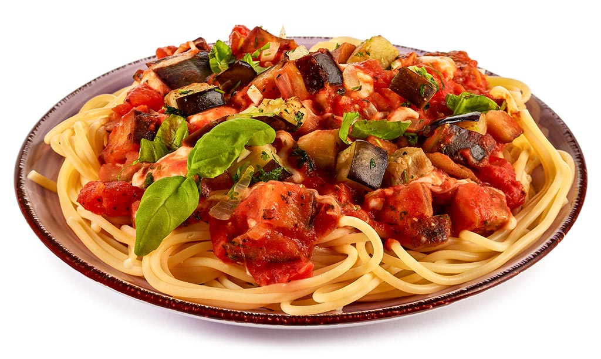

Receta de Pasta Siciliana

Linguini a la siciliana-pasta
Ingredientes
- 3 y 1/2 libra de carne de res molida
- 2 cucharadas de ajo en polvo
- 1 cucharada de aceite vegetal
- 2 cucharadas de caldo de res
- 1/3 taza de cebollas cortadas finamente
- 3 dientes de ajo cortados
- 1 sobre de salsa de tomate bolognesa
- 3/4 taza de agua
- 4 hojas de laurel
- 2 tazas de queso mosarela
- 1 taza de parmesano
- sal y pimienta al gusto
Pasos de Preparado
- En un tazón, colocar la carne, el ajo en polvo,el caldo de carne de res, la pimienta molida y marinar por 5 minutos
- En una cacerola grande, colocar el aceite, la cebolla, el ajo, el apio y sofreir por 2 minutos.
- Añadir la carne y cocinar por 10 minutos revolviendo constantemente
- Cuando la carnme adquiera una tonalidad gris clara, añadir la Salsa de Tomate Bolognesa, el agua, las hojs de laurel, la sal y pimienta y cocinar a fuego medio por 15 minutos
- Armado de la lasagna: Al momento de montar la lagsana, untar con un poco de aceite un recipiente refreactario o la bandeja que utilice. Colocar una pequeña cantidad de sal, cubrir el fondo de la bandeja con lascas de pasta precocida, verter una cantidad pequeña de carne, añadir el queso mozzarela y una minima parte de queso parmesano
- Repertil el procedimiento hasta llenar el recipiente
- Finalmente, colocar una capa de pasta precocida, la salsa que haya quedado y cubrir con queso. Tapar con papel aluminio y llevar al horno a 150ºC por 40 minutos
Regresar al Inicio